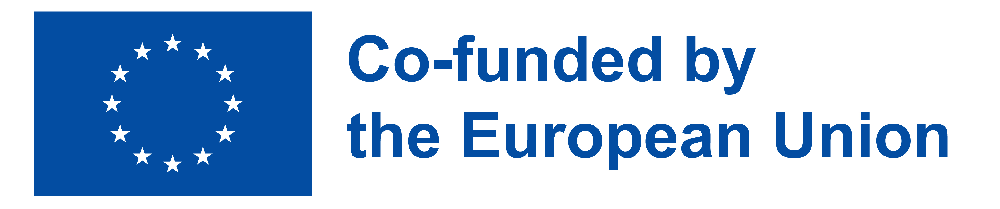

15 June – 15 July 2026
Schloss Bröllin Residency
Bröllin, Germany
Artist: TBA
Includes a public showing on 14 July.

An international cooperation project supported by the Creative Europe programme.
Welcome · Editorial · About the project
Bridging the A-I-R is a European cooperation project that explores, prototypes and shares sustainable models of artistic residencies. We connect independent cultural organisations, artists and mentors across Czechia, Slovakia, Hungary, Italy and Germany. Through research, practice and exchange, we build new bridges between local scenes and the wider European residency landscape. This platform is the central archive of everything that grows out of the project.
Web signpost · AIR in air
The btair.eu platform is the central European hub of the project, while three national platforms keep the conversation rooted in local contexts. Each one is curated by a partner organisation in its own language. Together they form one shared, multilingual network. Choose your entry point below.
Residencies in practice
Our research mapped existing residency models across our partner countries and beyond. We looked at how programmes are funded, how artists are selected, what infrastructure is offered and what role mentors play. The result is a comparative document that helps organisations design their own residency formats with eyes open.
PDF Residency Models — Research Report Preview / Download →Upcoming and ongoing residencies hosted by our partner organisations.
15 June – 15 July 2026
Bröllin, Germany
Artist: TBA
Includes a public showing on 14 July.
1 – 30 September 2026
Rome, Italy
Artist: TBA
Workshop + open studio at the end.
October 2026
Bratislava, Slovakia
Artist: TBA
Mentor-led research residency.
Reports from the field — 12 from resident artists, 6 from host organisations and 12 from mentors. Each one is a short, personal account of what happened, what worked and what surprised them.
Three weeks of fieldwork in a former textile factory, working with sound and local memory. Reflections on slowness and unexpected collaborations.
Open full report →What we learned about hospitality, logistics and what residencies cost in practice. A candid look at being a host, not just a venue.
Open full report →Notes from accompanying an artist through a research residency: shifting roles, listening more than advising, and the value of a second pair of eyes.
Open full report →Project outputs · Research, methodology, manuals
The full library of documents produced inside the project. Each one is open and free to download. Together they form a practical toolkit for anyone designing, hosting or mentoring an artistic residency in Europe today.
A framework for running residencies in an environmentally and socially sustainable way. Covers travel, hospitality, waste, fair pay and community relations. Built from real cases inside the project.
Open document →The project's strategic outlook on the future of artistic residencies in Central and Southern Europe. Identifies gaps, opportunities and shared priorities for the independent sector.
Open document →A practical, step-by-step guide for organisations hosting residencies — from preparing the space to handling contracts, communication and evaluation.
Open document →What does it mean to mentor a resident artist? This guide describes the role, its boundaries, and concrete techniques tested by mentors inside our network.
Open document →How to write an open call that is clear, fair and attractive to the right artists. Includes templates, checklists and examples from our partners' calls.
Open document →Collected press materials, articles and external coverage about the project. A useful resource for journalists, researchers and partners.
Open archive →Events & News · What is happening right now
Public events, open calls, residency announcements and project news. Everything is sorted by date — the most recent first. Each event links to its organiser, where you can find tickets, registration or more information.
Organised by Nová síť z.s.
Public launch of the second round of artistic residencies. Meet the partners, ask questions and get the application package.
More info →Organised by ANTENA
Five mentors share what mentoring an artist in residence really looks like — honest stories, no jargon.
Register →Organised by I.DRA
Closing presentation of the spring residency. Performance, conversation and a small reception in the courtyard.
More info →Organised by schloss bröllin e.V.
Public showing at the end of the summer residency. Outdoor stage, open to all.
More info →Contacts · More about partners
Bridging the A-I-R is built on partnership. Six organisations from five countries work together as equals, each bringing their own context, history and methods to the table.
Czech Republic
Nová síť is a Czech cultural service organisation working in art, education, networking and arts advocacy. Founded in 2005, it builds long-term infrastructure for the independent performing arts scene in Czechia. Within Bridging the A-I-R, Nová síť is the project coordinator and leads the overall strategy, communication and partner coordination. It also hosts residencies and contributes to research on sustainable residency models.
novasit.cz →Slovakia
Slovak network for independent culture. Brings deep knowledge of cross-sector advocacy and supports the project's research and mentor programme.
Website →Italy
Italian organisation working at the intersection of performance, urban space and community. Hosts residencies and contributes to the open call methodology.
Website →Spain
Independent cultural organisation focused on experimental performance and international exchange. Contributes to the mentor programme and good practice archive.
Website →Germany
One of Europe's longstanding international residency centres for performing arts. Hosts residencies and brings decades of practical know-how to the project.
Website →Hungary
Hungarian partner focused on dance, performance and cross-border collaboration. Co-leads the Hungarian platform and contributes to the strategic document.
Website →
Magdalena Košárková
Communication manager · Bridging the A-I-R
magdalenakosarkova@novasit.cz
Janek Břeň
Project Manager · Bridging the A-I-R
janbren@novasit.cz